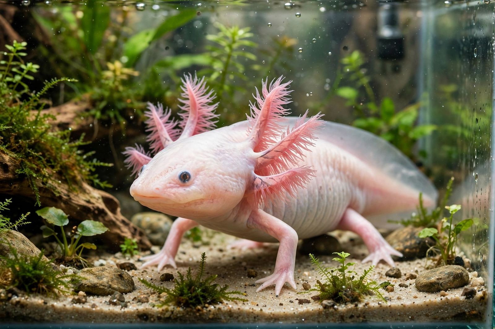

Axolotl
From Wikipedia, the free encyclopedia

The axolotl (Ambystoma mexicanum) is a paedomorphic salamander from the lake complex of Xochimilco near Mexico City, famous for retaining its larval features — external gills and an aquatic lifestyle — throughout adult life. It is a premier model organism for the study of regeneration, able to regrow limbs, spinal cord, heart tissue and parts of its brain; in the wild it is critically endangered.
Biology
Unlike most salamanders, axolotls rarely undergo metamorphosis (it can be induced by thyroid hormone), a trait called neoteny. Adults reach 15–30 cm and come in wild-type dark mottled forms and — in laboratories — leucistic (pink), albino and GFP-transgenic lines bred from a handful of founders since the nineteenth century. The axolotl genome, at some 32 billion base pairs, is the largest animal genome sequenced (2018) and is rich in repeats.
In the laboratory
Brought to Paris in 1864, axolotls became foundational to developmental biology; today colonies such as the Ambystoma Genetic Stock Center supply researchers probing limb patterning, scar-free healing and spinal-cord repair. Their cells' plasticity makes them a key system for regenerative medicine's central questions.
Conservation and culture
Xochimilco's canals — polluted, and stocked with invasive tilapia and carp — have seen wild density collapse from thousands per km² in the 1990s to a few dozen by the 2010s; conservation uses 'chinampa refuges' with filtered water. The axolotl (Nahuatl āxōlōtl, linked to the god Xolotl) is a Mexican cultural icon, appearing on the 50-peso banknote issued in 2021 and as a global internet and gaming celebrity.